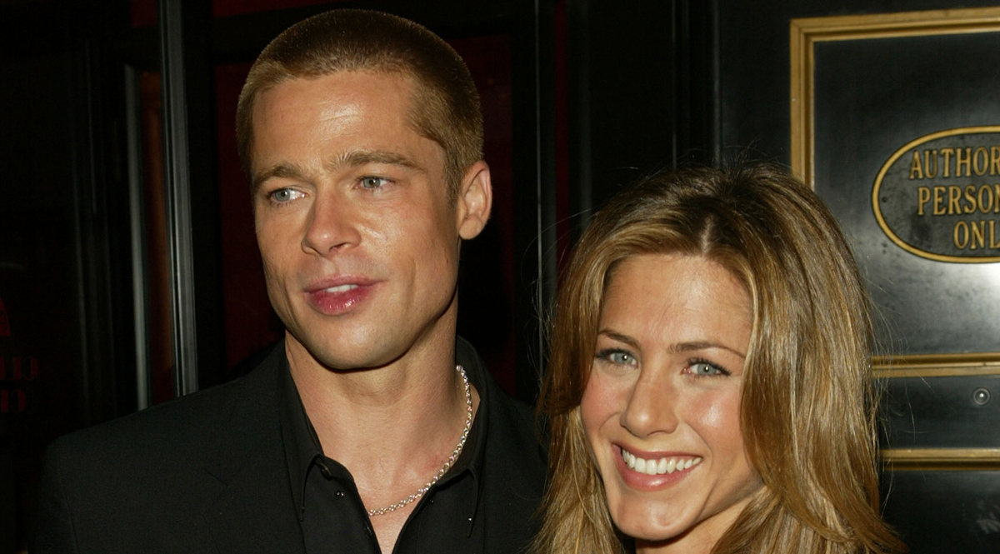

Selena Gomez Attends Her Best Friend’s Wedding in One of Her More Glam Outfits
Selena Gomez is saying "I do" to attending her BFF's wedding! The "Taki Taki" songstress looks like a total stunner at her best friend, Courtney Barry's, wedding. The blushing bride and her groom, Sam Lopez, tied-the-knot in an intimate ceremony in Los Angeles on Thursday.Friends of the newlyweds took to social media to post the couple's quaint wedding, which featured an outside ceremony and an indoor reception. Selena hasn't shared anything on her Instagram (just yet), but fan accounts captured the singer's ultra-glam beauty and fashion look at the event.The 26-year-old star opted for an elegant black gown, which featured large rhinestone embellishments. It was one of her more glam outfits to date.As for her beauty look? She kept things simple and classic, wearing her hair in a slick chignon bun.

Brad Pitt Attends Jennifer Aniston's 50th Birthday Party
In a surprise move that turned just about every head in Hollywood, Brad Pitt stopped by his ex-wife Jennifer Aniston's 50th birthday party in Los Angeles Saturday evening.The actor was photographed wearing a newsboy cap as he entered the Sunset Tower on Saturday evening to mingle with his former leading lady's nearest and dearest."Jen was the first guest to arrive around 8 p.m. wearing a black jumpsuit with her hair down," a source tells E! News. "Soon after Jen arrived, guests started pouring in including Reese Witherspoon, Ellen DeGeneres, Kate Hudson, Gwyneth Paltrow, Cindy Crawford, Robert Downey Jr., Jason Bateman, Jennifer Meyer, Brad Pitt, John Mayer, Katy Perry and Orlando Bloom, who arrived on a motorcycle.""Jen arrived alone but was excited to get inside," the insider shares. "Brad also arrived alone in a baseball cap. He ducked inside with his longtime security detail by his side.""Guests mingled out by the pool and back bar drinking cocktails and toasting Jen.
 Oscars producers say the show is in ‘good shape’ for Sunday
Oscars producers say the show is in ‘good shape’ for Sunday
“We’re good! We’re good!” Gigliotti said while laughing Thursday afternoon. “Did we look like cadavers yesterday?”Both have been working out of the Dolby Theatre, where hundreds of people are making sure everything is ready by Sunday night when the show airs live in more than 225 countries and territories.
But beyond the physical preparation, in the months leading up to the renowned show they and the Academy of Motion Picture Arts and Sciences have been under immense scrutiny from the public and even peers for basically everything : The choice of a host, the choice to go host-less, the plan for which songs would be included in the broadcast and which awards categories would be aired live.
Even the announcement that Queen and Adam Lambert would open the show was met with snark and sarcasm from some: They were worried about the excess time it would take for the cinematography winner to get to the stage and now there’s going to be a potentially six-plus-minute Queen performance of a song that isn’t even nominated? Oh, and they’re also on the hook to save the show from declining ratings (last year’s hit a record low of 26.5 million people, down 20 percent from the previous year) and keep the ABC broadcast to a trim three hours. No pressure, right? But Gigliotti and Weiss, who is also directing the show, aren’t sweating.
I think that the show is in very good shape,” Gigliotti said. “We feel good about the way it is flowing, looking (and) our presenters.”The film academy has announced a massive roster of celebrity talent that will be joining the show: Barbra Streisand, Michael B. Jordan, Tina Fey, Charlize Theron and Michael Keaton are just a few of the confirmed presenters.